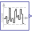

DistributionsDemonstrates noise with different types of distributions |
|
Diagram
Information
This information is part of the Modelica Standard Library maintained by the Modelica Association.
This example demonstrates different noise distributions methods that can be selected for a Noise block. Both noise blocks use samplePeriod = 0.02 s, y_min=-1, y_max=3, and have identical fixedLocalSeed. This means that the same random numbers are drawn for the blocks. However, the random numbers are differently transformed according to the selected distributions (uniform and truncated normal distribution), and therefore the blocks have different output values. Simulation results are shown in the next diagram:

{kind=link}
As can be seen, uniform noise is distributed evenly between -1 and 3, and truncated normal distribution has more values centered around the mean value 1.
Parameters (3)
| samplePeriod |
Value: 0.02 Type: Period (s) Description: Sample period of all blocks |
|---|---|
| y_min |
Value: -1 Type: Real Description: Minimum value of band for random values |
| y_max |
Value: 3 Type: Real Description: Maximum value of band for random values |
Outputs (2)
| uniformNoise_y |
Default Value: uniformNoise.y Type: Real |
|---|---|
| truncatedNormalNoise_y |
Default Value: truncatedNormalNoise.y Type: Real |
Components (3)
| globalSeed |
Type: GlobalSeed |
|
|---|---|---|
| uniformNoise |
Type: UniformNoise |
|
|  | truncatedNormalNoise |
Type: TruncatedNormalNoise |